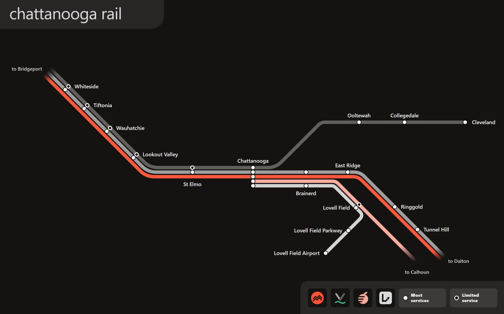
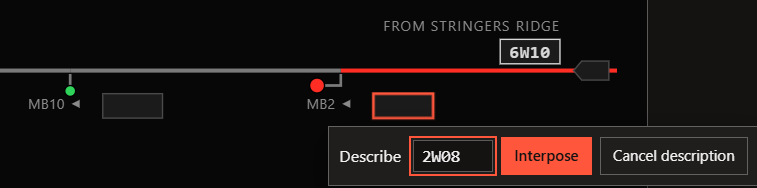
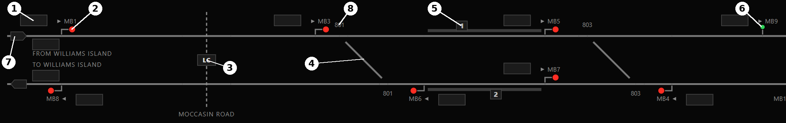
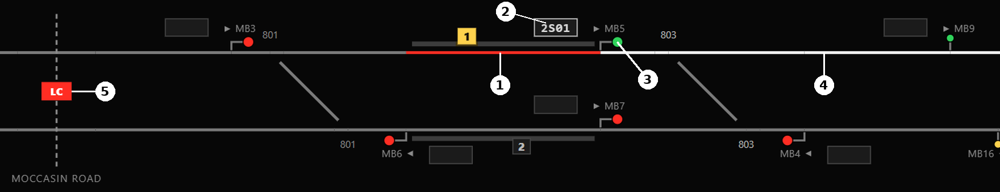
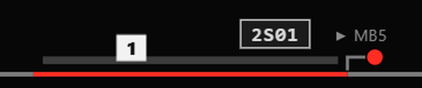
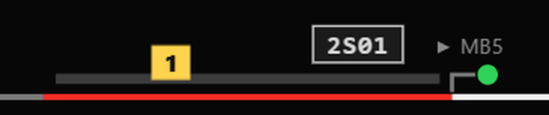
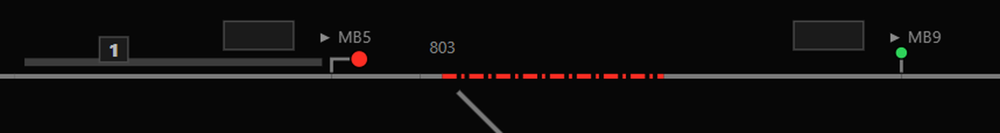
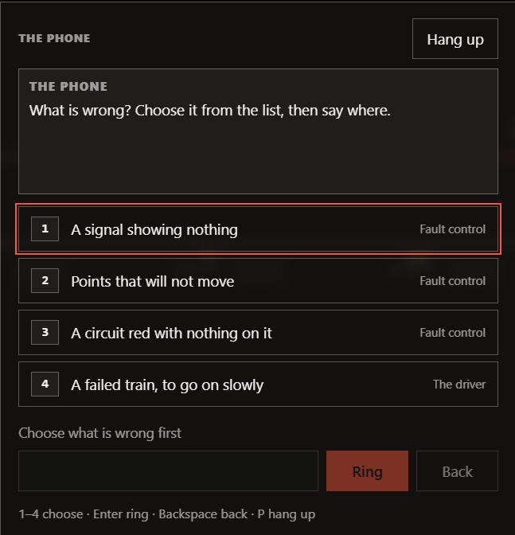
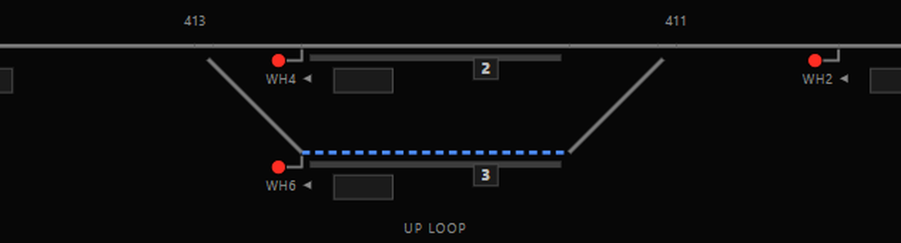

| Rule Book Module SO/01 Signalling Operations | Doc no: CR/OPS/SO01 Issue: 01 Date: September 2026 |
Working a desk on the Chattanooga network
| Document number | CR/OPS/SO01 |
| Issue | 01 |
| Compliance date | Before taking charge of a desk |
| Applies to | All eight desks, Whiteside to Cleveland |
| Supersedes | None |
| Owner | Head of Signalling Operations, Chattanooga |
| Issue | Date | Comments |
|---|---|---|
| 01 | September 2026 | First issue. |
| Signalling Operations | Doc no: CR/OPS/SO01 Issue: 01 Date: September 2026 |
This module sets out what a signaller must know before taking charge of a desk on the Chattanooga network, and how to deal with the situations that arise during a shift.
It applies to all eight desks.
Terms are explained in bold where they are first used, and collected in Appendix B.
You take charge of one desk for the whole shift. The other seven desks are worked by automatic route setting (ARS) and by the signallers on those desks. See Section 5.1.
Nothing on your desk is set automatically except automatic signals. Every route from a controlled signal on your desk must be set by you.
You are responsible for setting routes, regulating trains, and reporting faults on your area.
Down is eastbound, from Bridgeport towards Dalton, and is shown as the upper line of a pair on the panel. Up is westbound and is shown as the lower line.
On the Cleveland branch, Down is from Chattanooga towards Cleveland.
Trains keep left.
Trains enter and leave the network at fringes: Bridgeport (west of Whiteside), Dalton (east of Tunnel Hill) and Calhoun (the high-speed line, on the Lovell Field desk).
Cleveland and Lovell Field Airport are termini and have no fringe. Trains also start from and finish in depots: the Chattanooga carriage siding, Ooltewah TMD, Cleveland depot and the air cargo roads at Lovell Field.
| Signalling Operations | Doc no: CR/OPS/SO01 Issue: 01 Date: September 2026 |
| Code | Desk | Principal features |
|---|---|---|
| WS | Whiteside | Slygo Road level crossing; Whiteside platforms 1–2; crossovers 603 and 605 |
| WH | Wauhatchie | Tiftonia and Wauhatchie platforms; Wauhatchie up loop (P3) |
| RS | Riverside | Lookout Valley and St Elmo platforms; Cummings Highway crossing; down goods loop; Riverside yard |
| CT | Chattanooga | Through platforms P1–P4; bay P5; carriage siding; branch junction and diamond; Brainerd platforms |
| LF | Lovell Field | High-speed line; fast and slow lines; airport junction and flyover; Lovell Field Parkway; Lovell Field Airport; air cargo roads |
| ER | East Ridge | Lovell Field Junction and diamond; East Ridge and Ringgold platforms; Enterprise South plant siding; crossovers 511 and 513; Nashville Street crossing |
| TH | Tunnel Hill | Tunnel Hill platforms; Clisby Austin Road crossing; Chetoogeta tunnel; up goods loop |
| CL | Cleveland | Ooltewah and Collegedale platforms; Ooltewah TMD; single line into Cleveland terminus P1–P5; Cleveland depot |
Table 1: The desks
The main line runs Whiteside, Wauhatchie, Riverside, Chattanooga, East Ridge, Tunnel Hill. The Cleveland branch leaves Chattanooga. The high-speed line to Calhoun leaves East Ridge through Lovell Field.
You may clock in on any half hour from 06:00 to 20:00. A shift covers every train due to start in the following two hours, and the workings they form up to a quarter of an hour after that. The desk is handed over running: trains already out when you clock in are yours to signal, but only the shift's own trains are scored.
The shift ends when the last train has run, or 45 minutes after the two hours at the latest. It also ends early:
A shift cannot be paused. The clock may be run at 1×, 2×, 4× or 8×.
Traffic is heaviest in the rush hours, 07:00–09:30 and 16:00–19:00, when extra trains run.
The timetable is the same every day. The date, the weather and what goes wrong change every shift.
| Calm | Mixed | Rough | |
|---|---|---|---|
| Late trains | Up to 3 | Up to 5 | Up to 7 |
| Ground failures | None | A track circuit; on the high-speed line, a track circuit or points | Track circuits and points |
| Failed trains | Possible on the airport line | Yes | Yes |
| Trains with no description | None | One | Up to three |
| Possessions | None | None | On your own desk, from the start of the shift |
| Other events | None | One of: signal failure, missing driver, line blocked, leaf fall in season | All of them |
| Weather | No | No | Yes |
| Faults you do not report | See Section 6.6 | ||
Table 2: Conditions
| Signalling Operations | Doc no: CR/OPS/SO01 Issue: 01 Date: September 2026 |
Figure 1 shows the passenger network and the operators that run over it. It is the same map shown on the desk with M. The key uses each passenger operator's symbol; see Table 5.

Figure 1: The Chattanooga passenger network
The map shows stations, not desks. Use Table 1 to find which desk covers each station. Freight lines, loops, sidings and depots are not shown.
Trains shown running to Bridgeport, Dalton and Calhoun leave the network at those fringes (1.6). Cleveland and Lovell Field Airport are termini.
| Signalling Operations | Doc no: CR/OPS/SO01 Issue: 01 Date: September 2026 |
Every train carries a four-character headcode: a class digit, a destination letter and a two-digit train number.
Figure 2: Reading a headcode
The train number identifies the train only. Do not rely on it to tell direction.
| Digit | Class | Top speed | Length | Minimum stop |
|---|---|---|---|---|
| 9 | High-speed passenger | 125 mph | 200 m | 90 s |
| 1 | Express passenger | 90 mph | 160 m | 60 s |
| 2 | Stopping passenger | 75 mph | 80 m | 40 s |
| 3 | Railhead treatment train | 60 mph | 90 m | — |
| 4 | Freight, 75 mph | 75 mph | 320 m | — |
| 6 | Freight, 60 mph | 60 mph | 400 m | — |
| 5 | Empty stock | 75 mph, or as formed | 80 m, or as formed | — |
| 0 | Light locomotive | 75 mph | 20 m | — |
Table 3: Classes of train
Freight trains accelerate and brake far more slowly than passenger trains. Allow for this when planning a path.
The class sets how much lateness costs (Section 9.1). It does not change how trains are routed on other desks.
| Letter | Train finishes at | Letter | Train finishes at |
|---|---|---|---|
| A | Atlanta (via Dalton or Calhoun) | M | Ooltewah TMD |
| B | Bridgeport | N | Nashville (via Bridgeport) |
| C | Cleveland and its depot | P | Enterprise South plant |
| D | Dalton | R | Riverside yard |
| L | Lovell Field Airport and cargo terminal | T | Chattanooga and its carriage siding |
| S | Stringers Ridge (training desk only) | W | Williams Island (training desk only) |
Table 4: Destination letters
| Operator | Runs |
|---|---|
| Expresses between Nashville and Atlanta (class 1) | |
| High-speed trains between Chattanooga and Atlanta (class 9) | |
| Stopping and semi-fast trains, the Cleveland branch, the bay shuttle and their empty stock (classes 2 and 5) | |
| Airport trains from the Chattanooga bay to Lovell Field Airport | |
| Coal, through freight, air cargo, light engines and the railhead treatment train (classes 0, 3, 4 and 6) |
Table 5: Operators
| Signalling Operations | Doc no: CR/OPS/SO01 Issue: 01 Date: September 2026 |
Every signal and fringe has a berth, a small box that shows the headcode of the train approaching it. The headcode steps from berth to berth as the train passes each signal.
Hover over a berth to see the train's operator, journey, lateness and where it is next due on your desk. Click it to open the train's timetable card.
When a train forms its next working, its berth changes to the new headcode.
A train may enter with no headcode. It shows on the track as normal but its berth stays empty. The describer raises an alarm when it enters, and again after it has stood 30 s at a signal.
Automatic route setting will not route an undescribed train. On other desks a colleague interposes it after about a minute. On your desk nobody will: that is your job.
You can still route an undescribed train by hand.
To interpose a description:

Figure 3: Interposing 2W08 at MB2
The line is divided into blocks. Each block may be occupied by one train only.
Track circuits detect trains. An occupied track circuit is shown red on the panel. A signal will clear only into a clear block.
Signals on the network are four-aspect. The aspect shows how many blocks are clear ahead of the train.
| Signal | Aspect | Meaning |
|---|---|---|
| DANGER | The signal cannot clear. Stop. | |
| CAUTION | One block clear. The next signal is at danger, or the route ends at a buffer stop. | |
| PRELIMINARY CAUTION | Two blocks clear. The next signal is at caution. | |
| CLEAR | Three or more blocks clear, or the route runs off the desk at a fringe or to a shunt signal. |
Table 6: Signal aspects
| Signalling Operations | Doc no: CR/OPS/SO01 Issue: 01 Date: September 2026 |
A train takes up its route as soon as its signal clears, and runs to the end of that route. The aspect is for the signaller to read the line ahead. Shunt signals show only on or off.
| Type | Drawn as | Worked by |
|---|---|---|
| Controlled | A post with a hooked arm and a round head | You. Routes are set from it. |
| Automatic | A straight post with a smaller head, no arm | Itself. It clears whenever the block ahead is free. |
| Shunt | A post and arm with a square head | You. Used for depots, sidings and necks. |
Table 7: Types of signal
All controlled and shunt signals stand at danger unless a route has been set from them.
| Track shown | Meaning |
|---|---|
| Grey | Nothing set |
| White | A route has been set |
| Red, solid | A train |
| Red, dash-dot | A failed track circuit with no train on it |
| Blue, dashed | Blocked: a possession, something on the line, or being mended |
| Dotted | The fault team is waiting to take it |
Table 8: Track indications
| Signal shown | Meaning |
|---|---|
| Blinking white ring | Selected as the entrance of a route |
| Purple ring | Reminder applied |
| Yellow ring | Driver authorised to pass at danger |
| Blinking head | Approach locked |
| Dark head, red outline | Signal failed, showing nothing |
| Platform box flashing yellow | Train ready to start (Section 4.9) |
| Points number blinking | Points moving (blinking red: points failed) |
Table 9: Signal and equipment indications
Click any track to have the panel report what is on that track circuit.
A reminder holds a signal at danger. No route may be set from it until the reminder is removed. Use it to protect a line you do not want a train sent onto.
Right-click the signal and choose Apply a reminder. A controlled signal must have its route cancelled first. On an automatic signal, applying a reminder replaces it to danger.
Fringes are shown as arrow boxes at the edge of the desk. Boundary markers show where the line runs on to the next desk, with that desk's first signal.
Level crossings are shown as an LC box across a dashed road: dark with the barriers up, blinking red while they move, solid red when down.
| Signalling Operations | Doc no: CR/OPS/SO01 Issue: 01 Date: September 2026 |
Figure 4 shows part of an example panel at Moccasin Bend, with nothing set. The same symbols are used on every desk.

Figure 4: Example panel, Moccasin Bend. Down line above, Up line below.
| No. | Item | Notes |
|---|---|---|
| 1 | Berth | Shows the headcode of the train approaching the signal. Empty here: no train. See 2.2. |
| 2 | Controlled signal (MB1) | Hooked arm, at danger. Click it to start a route. See 3.3 and 4.1. |
| 3 | Level crossing (Moccasin Road) | Dark: barriers up. See 4.11. |
| 4 | Crossover | Shown lying normal: the diagonal is not connected to either line. See 4.7. |
| 5 | Platform number box | White while a train loads, flashing yellow at TRTS. See 4.9. |
| 6 | Automatic signal (MB9) | Straight post, clears on its own. See 3.3. |
| 7 | Fringe | Where trains enter and leave the desk, labelled with the next place. See 1.6. |
| 8 | Points number (801) | Click the points to swing them. Blinks while moving, blinks red if failed. |
Table 9a: Key to Figure 4
Nothing on the panel is occupied or set. Grey track is clear with no route. Compare with Table 8 once a train is on the desk.
| Signalling Operations | Doc no: CR/OPS/SO01 Issue: 01 Date: September 2026 |
The interlocking prevents conflicting routes from being set. It will not allow two trains to be routed into each other. It will not stop you routing a train the wrong way, holding it too long, or sending it into the wrong platform.
A route is the path from an entrance signal to an exit. To set a route:
The exit may be a signal, a buffer stop, a fringe arrow box, or the boundary marker to the next desk.
If the route is available, the points move, the route locks and the entrance signal clears. If it is refused, the reason is shown in the Last box (Table 10).

Figure 5: 2S01 ready to start in platform 1, with its route set from MB5. (1) Train, shown red. (2) Berth with the train's headcode. (3) MB5 cleared. (4) Route set, shown white. (5) Moccasin Road barriers down, shown red.
Clicking an automatic signal as the entrance selects the next controlled signal beyond it instead.
To put down a selected entrance without setting a route, press C or click the signal again.
A route to a signal beyond one or more automatic signals is set as far as the first automatic. The automatics then clear on their own.
There is one route between any entrance and exit. Where more than one path exists, the straighter one is used.
To send a train another way, route it to an intermediate signal on the path you want, then on from there.
A signal clears only when all of these are met:
The overlap is the track circuit immediately beyond the exit signal. It must be clear before the entrance signal will clear, in case a train runs past the exit.
Figure 6: Route and overlap. Direction of travel left to right.
A route is refused if a train is standing in its overlap. If the overlap track circuit has failed, the route sets but the signal stays at danger.
There is no overlap beyond a fringe, a buffer stop or an automatic signal.
| Signalling Operations | Doc no: CR/OPS/SO01 Issue: 01 Date: September 2026 |
Once set, a route locks its track circuits and points. Once a train has taken up the route, it keeps it even if the signal returns to danger, unless the route is cancelled (4.6).
The route releases section by section as the tail of the train clears each track circuit. The entrance signal is free for a new route as soon as the first section has released.
To cancel a route, right-click the entrance signal and choose Cancel the route.
If a train is within 1,200 m of the signal and approaching it, the signal returns to danger at once but the route stays locked for 2 minutes. This is approach locking. The signal head blinks while it is in force.
Cancelling a route also cancels any routes set on from its exit for the same train, including a route onto the next desk.
Points take 4 seconds to move. Both ends of a crossover move together. A signal will not clear over points that are still moving.
Points normally move when a route is set. To move them by hand, click them and choose Swing to reverse or Swing to normal. This is refused if they are locked by a route or have failed.
On the panel, the leg the points are not set for is shown broken off at the points.
| Message | Cause |
|---|---|
| No route from X to Y | There is no route between those two points. Check the exit. |
| X already has a route set | Cancel it first, or wait for the train to pass. |
| X has a reminder applied | Remove the reminder. |
| … is blocked | A possession or something on the line (Section 7). |
| the fault team has / is waiting for … | The track circuit is being mended or is about to be (Section 6.3). |
| … is occupied | A train is in the route. |
| conflicts with route … | Another route holds part of this one. |
| points … are locked normal / reverse | Another route holds the points the other way. |
| points … have failed | The route needs the points the other way (Section 6). |
| overlap … is occupied | A train is standing beyond the exit signal. |
Table 10: Route refusals
In these cases the route sets but the signal stays at danger, with no message. Right-click the signal: the title will say set, waiting.
| Signalling Operations | Doc no: CR/OPS/SO01 Issue: 01 Date: September 2026 |
When a train standing in a platform is ready to leave, the platform number box flashes yellow. This is Train Ready To Start (TRTS). Before that the box is white, showing the train is loading.
 |
 |
| Loading: box white | Ready to start: box flashing yellow |
Figure 7: Platform 1 before and at TRTS
TRTS shows from 30 s before the train is due away. It is due away at its booked departure, or once its minimum stop has passed if it arrived late. A train turning round to form its next working is due away at that working's booked departure, or once its turnround has passed if it arrived late. It does not show while the train has a fault or no driver.
Only numbered platforms show TRTS. Sidings, necks and the reception line do not.
Set the departure route when TRTS shows. A departure route set early holds its points and track circuits, and may block other moves.
Where a signal cannot clear because of a failure, the driver may be authorised to pass it at danger. To do so:
Authority is refused unless a route is set, the points are lying for it, any barriers are down, and a train is standing at the signal. A route being cancelled under approach locking (Section 4.6) is not set: wait for it to go, and set it again.
The train proceeds at caution, about 11 mph, until it passes the next signal. It stops short of the exit if that signal is at danger, or behind any train ahead.
There are four level crossings on the network: Slygo Road (WS), Cummings Highway (RS), Nashville Street (ER) and Clisby Austin Road (TH).
Barriers are worked by hand on your desk. Click the crossing and choose Lower the barriers or Raise the barriers. Lowering takes 20 s and raising 10 s.
A route may be set over the crossing with the barriers up, but its signal will not clear until they are down.
Barriers cannot be raised while a route is set over the crossing or a train is on it.
Raise the barriers once trains are clear. If they are left down for more than 4 minutes with nothing signalled over them, the police will report that the road is queueing.
Crossings on other desks are worked automatically.
| Signalling Operations | Doc no: CR/OPS/SO01 Issue: 01 Date: September 2026 |
Automatic route setting works the other seven desks. It sets routes for the train nearest each signal, towards that train's next booked place.
It takes trains in order of booked time, not by class. An earlier-booked train due within 4 minutes will hold a later train that wants a conflicting route, for up to 2½ minutes. Empty stock going to a depot gives way to any booked train due within 4 minutes, for up to 5 minutes.
It will not route a train beyond a booked stop until 60 s before its departure.
Where a train's route is blocked for 2 minutes, the other desk will move it to another platform or run it past an optional loop call.
You cannot see the other desks. The Trains tab lists what is coming your way.
When two trains want conflicting routes, send first the one whose delay costs most (Section 9.1):
| Classes | Cost of each minute late |
|---|---|
| 1, 9 | Highest |
| 2, 3 | Half as much |
| 4, 5, 6, 0 | A quarter as much |
Table 11: Priority by class
A train kept waiting at one of your controlled signals for 10 minutes will earn a black mark (Section 9.4). Do not hold a low-priority train indefinitely.
A loop allows a slower train to be put aside while a faster train passes. Release the slower train once the faster one has cleared.
Booked loop calls are:
Goods loop calls are optional. A freight run through instead of into the loop is not counted as a missed call.
The Tunnel Hill up goods loop has no booked calls but may be used.
Each train is booked into a platform at each call. Using another platform is permitted but is a platform change (Section 9.3). So is using another road of the same depot or cargo terminal.
A train that runs past a booked call without stopping is a missed call, which costs more than a platform change.
Do not send a train onto the single line unless a platform is free for it at the far end. Keep the last free platform at Collegedale for any train already on the single line in the opposite direction.
A train that finishes its work at Chattanooga or Cleveland runs empty to a depot about 5 minutes after arriving. Each depot road holds one train. If every depot it can go to is full, the train stays in its platform, except a Peachline train at Chattanooga, which runs empty to Atlanta.
Its way to the depot is booked from the platform it was booked into. If it finishes in a platform that way does not start from, Control books it again from where it is, usually up the branch to Ooltewah TMD, under a new headcode, and the alarm says so. The carriage siding at Chattanooga can only be reached from platform 1 and the bay.
Stabled trains are listed in the Trains tab after the running ones, above the next five due.
| Signalling Operations | Doc no: CR/OPS/SO01 Issue: 01 Date: September 2026 |
| Fault | On the panel | Working round it |
|---|---|---|
| Track circuit | Red dash-dot with no train. Alarm from the Interlocking. | Set the route so the points lock, then authorise the driver past (4.10). Ring it in. |
| Points | Number blinks red. Cannot be swung. | Routes over the way the points are lying still work. Routes needing the other way are refused. Ring it in. |
| Frozen points | As failed points. | As failed points. They thaw when the cold ends. |
| Controlled signal | Dark head, red outline. | Set the route, then authorise the driver past. Ring it in. |
| Automatic signal | Dark head, red outline. | The driver stops for 1 minute, then goes on at caution if the block ahead is clear. Ring it in. |
| Failed train | Trains tab: fault, N min. | Ring the driver (6.4). |
| Missing driver | Trains tab: no driver, N min. | Nothing. The relief driver is on the way. |
| No description | Empty berth. | Interpose it (2.3). |
Table 12: Faults

Figure 8: A failed track circuit beyond MB5. Red dash-dot with no train on it and no headcode in any berth. MB5 will not clear over it.
Press P, or the phone at the top of the screen. Then:

Figure 9: The phone
Points may be given by the number shown on the panel. Where a track circuit name is used on more than one desk, prefix the desk code, for example RS.UM6.
Fault control reads back what you have reported and when the team will arrive. Check the read-back against the fault.
| Signalling Operations | Doc no: CR/OPS/SO01 Issue: 01 Date: September 2026 |
The clock keeps running while the phone is open.
The fault team travels from Chattanooga. Travel times are:
| Desk | CT | RS | ER | WH | LF | CL | TH | WS |
|---|---|---|---|---|---|---|---|---|
| Minutes | 6 | 8 | 8 | 10 | 10 | 12 | 14 | 14 |
Table 13: Fault team travel times
On arrival the team asks for a track circuit to itself, and mends the fault as soon as it has it: 3 minutes for a signal, 5 for a track circuit, 6 for points.
The track circuit needed is:
| Stage | What happens |
|---|---|
| Waiting | Shown dotted. No new routes may be set over it. A route already set still works. |
| Mending | Begins once no train is on the circuit and no route holds it. Shown blue dashed. Nothing may be routed over it. |
| Handed back | The team reports the repair and the circuit is returned to use. |
Table 14: Stages of a repair
Keep the circuit clear so the team can start. A train booked to start from a platform the team needs will start from another platform instead.
A failed train stands in its platform for 8 to 14 minutes at Chattanooga, or 3 to 10 minutes for an airport train at Lovell Field, then continues normally.
If you ring the driver (option 4, with the headcode), the driver isolates the fault in 1 minute. The train then runs at 25 mph for the rest of its working, freeing the platform sooner.
Decide which is better. A train at 25 mph clears the platform but may delay trains behind it.
Crew control reports a train with no driver and when the relief will arrive. There is nobody to ring. Plan around the occupied platform.
| Conditions | Who reports a fault on your desk |
|---|---|
| Calm | No ground faults occur |
| Mixed | A driver, 2 minutes after standing at a failed signal. Otherwise Control, 10 minutes after the fault begins |
| Rough | Control only, 20 minutes after the fault begins |
Table 15: Reporting of faults not rung in
Faults on other desks are reported by their signallers a minute after they begin.
| Signalling Operations | Doc no: CR/OPS/SO01 Issue: 01 Date: September 2026 |
A possession is a section of line handed to engineers. No train may enter it. Possessions occur in Rough conditions only and are in force from the start of the shift: one on your own desk, and one elsewhere. If a train is on the line or routed over it when you clock in, the Engineer waits: clear it, and route nothing more onto it.
A possessed track circuit is shown blue dashed. The Engineer reports it at the start and when it is handed back. It may last from 45 to 85 minutes.
Possessions are taken on platforms, loops, the fast lines, and the Down Main between the crossovers at Whiteside and East Ridge. Plan other platforms for trains booked into a platform under possession. On the high-speed line, trains may be taken round on the slow lines. At Whiteside and East Ridge, take each down train over the Up Main and back: WS3 to WS7 to WS5 over 603 and 605, or ER11 to ER29 to ER13 over 511 and 513.

Figure 10: Wauhatchie up loop (platform 3) under possession, shown blue dashed. Up trains booked into the loop will need another platform.
The line may be blocked in both directions by trespassers, cattle, a fallen tree, a person on the line, children on the embankment or a road vehicle through the fence. The blockage lasts 8 to 14 minutes.
It is shown blue dashed. Hold trains clear of it.
Once Mobile operations report the line clear, the first train in each direction examines the line and runs at caution to the next signal.
From late September to the end of November, leaves may make the railhead slippery at one of: Tiftonia cutting, Whiteside climb, the Chetoogeta approaches, or Ringgold to East Ridge.
Trains are restricted to 35 mph over the affected section. This is not shown on the panel: it is reported as an alarm.
A railhead treatment train, 3D11 from Bridgeport or 3B12 from Dalton, is booked 40 minutes into the shift. Once it has run over the section, normal running resumes. Give it a clear path.
Weather occurs in Rough conditions only. It begins 10 to 80 minutes into the shift, rail heat not before 12:00, and lasts 30 to 49 minutes.
| Weather | Season | Effect |
|---|---|---|
| High winds | Spring, autumn | 60 mph over the whole railway |
| Rail heat | Summer, 12:00–19:00 | 60 mph over the whole railway |
| Snow | Winter | 50 mph over the whole railway |
| Flood | Spring to autumn | 10 mph at one place: Riverside, Chetoogeta, the Ooltewah branch or Slygo Road |
| Ice | Winter | Two sets of points freeze (Section 6.1) |
Table 16: Weather
Weather restrictions are not shown on the panel. The start screen forecast warns of gales, flooding, heat, snow, frost and leaf fall.
Where more than one speed restriction applies, the lowest applies. Caution and a failed train's 25 mph limit apply on top.
| Signalling Operations | Doc no: CR/OPS/SO01 Issue: 01 Date: September 2026 |
Alarms on your desk sound a chime and are listed in the Alarms tab with the time and who reported them. Click an alarm to bring the panel round to the place it concerns.
Acknowledge each alarm once you have dealt with it. K acknowledges all of them.
| Reported by | Reports |
|---|---|
| Interlocking | Equipment failures |
| Fault control / Fault team | Faults rung in by others; repairs: booked, on site, mending, handed back |
| Driver of a train | Train faults; standing at a signal for more than 4 minutes; needing a platform to reverse in; cattle, a fallen tree or a person on the line |
| Drivers | Leaf fall |
| Crew control | Missing drivers |
| Describer | Trains without a description |
| Dispatcher | Late starts; trains started from another platform |
| Control | Late running, wrong exits, weather, the end of leaf fall |
| Engineer | Possessions |
| Mobile operations | Line clear after a blockage; floods |
| Police / public | Something on the line; crossings left down |
| Shift manager | Black marks; calls about nothing |
Table 17: Who reports what
The top bar shows the clock and its rate, the percentage of trains on time, your black marks, the next train due on your desk, and the last message. A bell sounds when a train comes onto your desk.
| Tab | Shows |
|---|---|
| Timetable | Every train in the shift booked at or through your desk: headcode, journey, booked time, platform and where it is now. Trains 5 minutes or more late are flagged. |
| Trains | Trains on your desk (those waiting on you first), coming your way, elsewhere, and stabled, with the next five due on your desk. |
| Alarms | See 8.1. |
Table 18: Side panel
The finder (F) searches by headcode, operator or place.
A train's card shows each place it calls at or passes, with booked and actual times and platform. Places far from your desk are folded into one row until it is clicked. While the card is open, the train's berth and next booked platform are outlined on the panel.
M shows a diagram of the passenger network. It is for reference only and shows no trains.
| Signalling Operations | Doc no: CR/OPS/SO01 Issue: 01 Date: September 2026 |
Each train is scored out of 100. Points are deducted for lateness, platform changes and missed calls.
The lateness deduction cannot take a train below zero, but platform changes and missed calls can.
| Classes | Weight | Points lost per minute late | No lateness points left at |
|---|---|---|---|
| 1, 9 | 2 | 20 | 5 minutes |
| 2, 3 | 1 | 10 | 10 minutes |
| 4, 5, 6, 0 | ½ | 5 | 20 minutes |
Table 19: Lateness by class
Lateness is measured once, where the train finishes: on arrival if it terminates, or as it leaves the network. Early running counts as on time.
A train sent off the wrong way, still on the railway at the end of the shift, or never run, scores zero.
The shift total is the sum of all trains, less 25 points for every call about nothing (6.2), and cannot fall below zero. Points are shown only at the end of the shift.
A train is on time if it is less than 5 minutes late. The top bar shows the percentage of finished trains on time. At the end of the shift, trains still running and trains never run are counted as late.
| Penalty | Points | Incurred by |
|---|---|---|
| Platform change | −15 | Calling at a platform other than the booked one; starting from another platform; leaving at the right place on the other line |
| Missed call | −40 | Running past a booked stop (goods loop calls excepted) |
| Call about nothing | −25 | Sending the fault team to the wrong item; ringing the driver of a train with nothing wrong |
Table 20: Penalties
Calls about nothing are not black marks.
| Black mark | When |
|---|---|
| Train kept standing | A train stands 10 minutes at one of your controlled signals, or 10 minutes past its stop time, without moving on. This includes a train waiting to be authorised past a failure. Time standing with a fault or no driver does not count: the 10 minutes start once the train is free. Nor does time with every way on shut by the engineers, or by points failed the wrong way once they are rung in: the 10 minutes start once a way opens. |
| Train delayed | A train leaves your desk 10 minutes or more later than it arrived on it, or than it started, if it formed its next working there. Lateness it brought with it, what a turnround could not make up, and time it was shut in as above, do not count. |
| Wrong exit | A train is sent off your desk at a fringe that is not where it is going. |
| Train sent the wrong way | A train you routed can reach none of the places it is still booked to. |
Table 21: Black marks
| Signalling Operations | Doc no: CR/OPS/SO01 Issue: 01 Date: September 2026 |
On receipt of a third black mark, the signaller is relieved. The shift ends at once and cannot count as a best.
At the end of the shift the results show the percentage on time, points, average lateness, black marks, and every train with its lateness and any penalties. A relieved shift shows no points or average lateness, and a shift in which no train finished shows No score.
The best shift on each desk is kept, whatever the conditions. A shift replaces it with a higher percentage on time, or the same percentage and more points.
| Signalling Operations | Doc no: CR/OPS/SO01 Issue: 01 Date: September 2026 |
| Key | Action | Key | Action |
|---|---|---|---|
| The clock | |||
| 0 | Hold the clock, on the training desk | 1 | Real time |
| 2 | Twice real time | 4 | Four times real time |
| 8 | Eight times real time | ||
| The board | |||
| ← | Look further west | → | Look further east |
| ↑ | Look further up | ↓ | Look further down |
| I | Zoom in | O | Zoom out |
| B | The board back as it opened | Z | The whole desk in view |
| C | Put down a signal chosen for a route | M | The network diagram, and back |
| The panel | |||
| T | Timetable | R | Trains |
| A | Alarms | K | Acknowledge every alarm |
| F | Find a train, operator or place | ||
| The phone | |||
| P | The phone, where the pointer is, and hang up | ||
| Help | |||
| H | The written guide, and back | L | Learn the desk: the lesson |
| S | The menu: sound, the shift and the lesson | Enter | Next, in the lesson |
Table 22: Keys
On the phone: 1–4 choose, Enter rings, Backspace in an empty box goes back, and P, from the list, hangs up.
| Action | Result |
|---|---|
| Click a signal, then an exit | Set a route |
| Right-click a signal | Cancel the route, reminders, authorise past at danger |
| Click points or a crossing | Swing points; raise or lower barriers |
| Click a berth | Train card, or interpose if empty |
| Right-click a berth | Timetable, interpose, cancel description |
| Click track | Report what is on the track circuit |
| Wheel | Zoom about the pointer |
| Drag empty panel | Move the view |
| Double-click empty panel | Reset the view |
Table 23: Mouse
| Signalling Operations | Doc no: CR/OPS/SO01 Issue: 01 Date: September 2026 |
| Term | Meaning | See |
|---|---|---|
| Approach locking | A cancelled route held for 2 minutes because a train is approaching | 4.6 |
| ARS | Automatic route setting, which works the other desks | 5.1 |
| Aspect | What a signal is showing | 3.2 |
| Berth | The box by a signal showing the headcode of the train approaching it | 2.2 |
| Black mark | A record of a serious error. Three and the signaller is relieved | 9.4 |
| Block | A section of line that may hold one train | 3.1 |
| Control | The office overseeing the whole network | 6.6 |
| Down / Up | Eastbound / westbound | 1.5 |
| Entrance signal | The signal a route starts from | 4.1 |
| Exit | Where a route ends: a signal, buffer stop, fringe or boundary | 4.1 |
| Fringe | Where trains enter or leave the network | 1.6 |
| Headcode | The four-character train identity | 2.1 |
| Interlocking | The system preventing conflicting routes | 4 |
| Interpose | To enter a headcode into a berth by hand | 2.3 |
| Overlap | The track circuit beyond an exit signal that must be clear | 4.4 |
| Points | Moveable track that lets a train change lines | 4.7 |
| Possession | Line handed to engineers. No trains may enter | 7.1 |
| Reminder | A hold keeping a signal at danger | 3.5 |
| Route | The locked path from an entrance signal to an exit | 4.1 |
| Route locking | Locking of a route's track and points until the train has passed | 4.5 |
| TMD | Traction Maintenance Depot | 1.6 |
| Track circuit | Equipment that detects a train on a section of line | 3.1 |
| TRTS | Train Ready To Start | 4.9 |